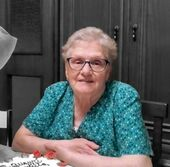

„Am semnat cu mâna mea rezultate negative pentru oameni care îi purtau în ei”

Un biolog cu 34 de ani în laboratorul de parazitologie explică de ce hârtia iese curată atunci când corpul este deja plin — și de ce sute de mii de români tratează, ani la rând, exact lucrul greșit.
Șase ani, Aurica Pop — învățătoare pensionată dintr-un sat de sub Gutâi — a strâns într-un caiet de dictando toate diagnosticele primite. Unsprezece, scrise cu pixul, unul sub altul. Niciunul adevărat. Povestea ei a ajuns la o femeie care, timp de treizeci și patru de ani, s-a uitat prin microscop la probele altora — și care astăzi spune un lucru pe care laboratoarele nu îl scriu pe buletinul de analize.
Am urcat spre Budești într-o joi, pe la prânz. Drumul spre casa Auricăi trece pe lângă biserica de lemn și apoi o ia în sus, pe un uliț cu pietriș, pe care mașina îl urcă în treapta întâi. La poartă ne aștepta cu caietul în mână, ca și cum ar fi fost un act de identitate.
Are 59 de ani. Treizeci și unu i-a petrecut la catedră, la școala din sat, la clasele primare. E o femeie care notează. Care ține evidență. Și tocmai de asta, când a început să se simtă rău, a făcut singurul lucru care i s-a părut logic: a cumpărat un caiet de dictando și a scris în el fiecare consultație, fiecare diagnostic, fiecare medicament.
„Am crezut că mă ajută”, spune. „Că, dacă am totul scris, o să găsească cineva firul. N-a găsit nimeni nimic. Iar acum caietul ăsta e dovada că șase ani din viața mea s-au dus pe apa sâmbetei.”
- Gastrită cronică
- Sindrom de colon iritabil
- Anemie feriprivă
- Dermatită alergică de contact
- Reflux gastroesofagian
- Sindrom de oboseală cronică
- Tulburare anxioasă
- Intoleranță la gluten (neconfirmată)
- Disbioză intestinală
- Insomnie de menopauză
- „Nimic patologic — sunt anii”
„Ultimul a fost cel mai dureros. Un domn doctor tânăr, cumsecade, s-a uitat peste caiet, mi-a dat foile înapoi și mi-a zis blând: «Doamna învățătoare, sunt anii. Trebuie să vă obișnuiți.» Aveam 57. Eu, care urcam dealul ăsta cu doi saci în spate la 50.”
Aurica Pop, 59 de ani, Budești„Cel mai rău e că analizele îmi ieșeau bune. Toate. Sângele «în limite normale». Atunci de ce mă simțeam ca și cum se hrănește cineva din mine? Ajunsesem să cred că îmi imaginez. Că am înnebunit puțin.”
Aurica Pop, 59 de ani, BudeștiFemeia care s-a uitat 34 de ani la ceea ce alții primeau doar pe hârtie
Interviu cu Lidia Anghelescu, biolog, 34 de ani șefă de laborator de parazitologie la spitalul județean

— Eu n-am fost doctor de cabinet. Eu am stat într-o cameră fără ferestre, cu microscopul în față, și m-am uitat la ce trimiteau doctorii de sus. Treizeci și patru de ani. Zeci de mii de probe. Oameni pe care nu i-am văzut niciodată la față și despre care știam mai multe decât familiile lor.
Am să vă spun simplu, fără cuvinte savante. Când o probă e curată, câmpul de sub lentilă e gol. Liniștit. Când nu e curată, arată ca și cum cineva ar fi presărat mac peste sticlă. Ouă. Zeci, la o singură privire. Și atunci scrii „pozitiv” și pui parafa.
Dar iată ce nu vă spune nimeni. La aceeași femeie, cu o săptămână înainte, scrisesem cu mâna mea „negativ”. Aceeași femeie. Același corp. Aceeași boală, care era acolo și atunci. Doar că, în ziua aceea, nu era nimic de văzut.
Doamna Anghelescu vorbește rar, cu pauze lungi, ca cineva obișnuit să nu se pripească. S-a pensionat acum câțiva ani. Locuiește în Baia Mare, într-un bloc de lângă spitalul unde a lucrat. Are pe masă un dosar cu coperți de carton — a păstrat, spune ea, „câteva lucruri de care nu m-am putut despărți”.
„Oamenii cred că paraziții sunt ceva de demult. Din sărăcie. Din alte țări. E o închipuire care costă ani de viață. Sunt aici, la noi, în lucrurile obișnuite: în carnea de la tăierea porcului, dacă n-a stat destul pe foc; în verdeața nespălată din grădină; în pământul de sub unghii; în apa din fântână; pe mâini, după ce ai scărpinat câinele după ureche. Și, odată intrați, pot sta ani în corp, se înmulțesc și îl otrăvesc încet — în timp ce omul își spune că e gastrită, alergie sau că, pur și simplu, a obosit.”
Dosarul pe care nu l-a putut arunca
— Îl chema Vasile Tămaș. Cincizeci și șapte de ani. Lucrase paisprezece ani în construcții, în Italia, și se întorsese acasă, la Săpânța, să-și facă o casă. Nu l-am văzut niciodată. I-am văzut doar numele, pe trei buletine de analiză, în doi ani.
De trei ori a trimis probă. De trei ori am scris „negativ”. Ultima dată, doctorul lui a notat pe trimitere: „astenie marcată, scădere ponderală, fără cauză decelabilă”. Adică: omul se topește și nu știm de ce.
Am aflat peste doi ani, de la o colegă. Făcuse un accident vascular. Avea 59 de ani.
— Nu spun că paraziții l-au omorât. Nu pot să spun asta și nu o voi spune niciodată. Spun altceva: nimeni nu a căutat mai departe, pentru că avea trei hârtii care ziceau că nu e nimic. Așa se pierd oamenii la noi. Nu din rea-voință. Din hârtii care par liniștitoare.
De asta am acceptat să vorbesc. Am ieșit la pensie și mi-am zis că am dreptul să tac. Dar nu am.
De ce tace hârtia: trei lucruri pe care nu vi le explică nimeni
Cum e posibil să ai analize impecabile și un corp care se stinge

— Întrebarea asta am auzit-o de o mie de ori: „Doamnă, dar eu îmi fac analize în fiecare an și e totul bine.” Vă explic de ce asta nu înseamnă mare lucru.
- În sânge nu suntHemoleucograma obișnuită nu îi arată — și nu pentru că laboratorul e prost, ci pentru că ei nu stau în sânge. Stau în peretele intestinului. Sângele arată cel mult umbra lor: o hemoglobină puțin scăzută, pe care apoi ani de zile o tratezi cu pastile de fier.
- Proba de scaun nu se face o datăSingura analiză care i-ar putea prinde minte, dacă o faci o singură dată. Nu elimină ouă în fiecare zi, ci în cicluri. Dacă proba pică într-o zi „goală”, buletinul iese curat. Peste o săptămână poate iese iar curat. Ca să însemne ceva, se repetă de trei-patru ori, la câteva zile distanță.
- Nimeni nu o cere de trei oriȘi aici e nodul. În șase ani de umblat pe la doctori, Auricăi Pop nu i s-a recomandat niciuna. Nici măcar una. Lui Vasile Tămaș i s-au făcut trei — dar câte una pe an, ceea ce e ca și cum n-ai fi făcut niciuna.
Oboseala care nu trece, balonarea, mâncărimile de piele, „alergiile” și „nervii” după 40 de ani nu sunt întotdeauna „de la ani”. De foarte multe ori sunt semnul unui corp care duce în spate o povară vie.
Pastilele pentru „gastrită” și pentru „alergie” acoperă simptomul, în timp ce cauza continuă liniștită să se înmulțească. Fără o curățare completă, corpul slăbește an după an — iar problema urcă din intestin spre ficat și bilă.
„Pastila de la farmacie lovește o specie. Iar în om trăiesc zeci”
De ce tratamentul obișnuit dă greș aproape întotdeauna — și ce face el, de fapt, ficatului
— A doua închipuire, la fel de scumpă ca prima: că e destul să înghiți o pastilă și gata. În corpul omului trăiesc zeci de specii — unele în intestin, altele în ficat, altele în căile biliare, altele în mușchi. O pastilă de farmacie lovește cel mult una sau două. Restul rămân, se înmulțesc, continuă.
Uite cercul din care oamenii nu mai ies: iei pastila, timp de câteva săptămâni îți e mai bine, apoi revin oboseala, balonarea, pielea — și îți spui „păi nu-s ăia, că doar am luat medicament”. În realitate ai lovit o parte din problemă. Și, pe deasupra, chimia tare din pastilele astea lovește exact ficatul și rinichii — adică fix organele care duceau deja greul.

„Șapte ani m-am tratat de «alergie». Creme, pastile, picături, doi dermatologi. Mă ardea pielea pe brațe și mă scărpinam noaptea până lăsam urme. Nimeni, dar absolut nimeni, n-a pomenit cuvântul ăsta.”
Aurica Pop, 59 de ani, Budești„Pe mine m-au ținut cinci ani pe gastrită. Greutate după fiecare masă, greață, balonat ca o tobă. Am înghițit tot ce mi-au dat. Degeaba. Și slăbeam, deși mâncam ca un om normal. Cinci ani și o groază de bani, pe un diagnostic care nu era al meu.”
Ilie Mureșan, 63 de ani, fost miner la Baia SprieCazuri care mi-au schimbat privirea — și vă vor schimba felul în care vă priviți propria sănătate
— Dați-mi voie să vă spun ce am avut în registru an după an. Nu cifre. Nu statistici. Oameni. Oameni cu nume, care până în ultima zi au crezut că problema lor e cu totul altceva.

„Eram obosită tot timpul, palidă, stoarsă. Doctorii ziceau: «lipsă de fier, luați pastile». Le-am luat ani de zile. Nimic. Nimeni n-a întrebat dacă nu cumva ia altcineva fierul ăla din mine. Și îl lua.”
din cazurile despre care vorbește doamna Anghelescu
„Slăbeam, deși mâncam normal. Nevastă-mea glumea că am «metabolism rapid». N-a fost de râs. Mânca ceva în locul meu, din mine. Am înțeles prea târziu ca să-mi mai fie de folos — dar dumneavoastră, cei care citiți asta, nu sunteți încă acolo.”
din cazurile despre care vorbește doamna AnghelescuSemnele pe care le pune toată lumea pe seama anilor
Bifați-le pe cele pe care le recunoașteți la dumneavoastră. Doamna Anghelescu spune că, dacă adunați trei sau mai multe, merită să vă puneți întrebarea — indiferent ce scrie pe ultimele analize.
- Oboseală care nu trece — dormiți opt ore și vă treziți ca după o zi de coasă;
- Balonare, gaze, greutate după masă — „parcă fierbe ceva în burtă”;
- Constipație și diaree care se schimbă între ele fără motiv;
- Mâncărimi, erupții, eczeme, „alergii” care vin și pleacă de nicăieri;
- Poftă de dulce și de făinos pe care nu o puteți stăpâni;
- Scrâșnit din dinți în somn, somn agitat, treziri pe la trei dimineața;
- Anemie și lipsă de fier care nu se rezolvă nici cu pastile;
- Cearcăne, piele fără culoare, păr și unghii care se rup;
- Mâncărime în zona anală, mai ales noaptea;
- Irascibilitate, „nervi”, ceață în cap, memorie slabă;
- Răceli și infecții dese — un corp care nu mai are cu ce să se apere.
Fiecare dintre ele se pune ușor pe seama altui lucru. Exact de asta rămân nedescoperite ani întregi.
Fiecare zi cu povara asta în corp este încă o zi de intoxicare. Mii de oameni tratează ani de zile lucrul greșit, în timp ce cauza reală lucrează nestingherită. Nu mai amânați — nici pentru dumneavoastră, nici pentru cei de lângă dumneavoastră.
— Eu am privit toată viața consecințele. Dar soluția nu a venit dintr-un laborator. A venit dintr-o stână. De la un om care nu are nicio diplomă de medic, dar care face de cincizeci de ani, corect, un lucru pe care noi, oamenii, nu ni-l facem niciodată nouă înșine.
Calendarul de pe ușa grajdului
Toader Bumbu, 74 de ani, fost tehnician veterinar la ferma de stat, astăzi crescător de oi în Breb
— Am făcut școala de tehnicieni veterinari la Cluj și douăzeci și doi de ani am lucrat la ferma de stat. După ce s-a desființat, am rămas cu oile mele. Optzeci de capete, doi câini și o pisică ce nu stă niciodată în casă.
Pe ușa grajdului am bătut în cui un calendar. Acolo îmi însemnez cu creionul chimic când deparazitez. Oile — primăvara și toamna. Câinii — de patru ori pe an, că umblă prin pădure. Pisica — de două ori. Vine nepotul din Baia Mare și râde de mine, zice că sunt mai riguros decât la spital.
— Aveam vreo șaizeci de ani atunci. Și mi-am pus întrebarea simplă, de om prost: eu mănânc din carnea lor, beau din aceeași fântână, sap în același pământ, dorm cu câinii la picioare — și pe mine cine mă trece pe calendar? Nimeni. Niciodată. Nici în copilărie, nici la armată, nici la fermă. De șaizeci de ani, nimeni.
Animalul din curtea mea era mai bine păzit decât mine. Asta e rușinea de care nu m-am putut scutura.
— La fermă preparam pentru animale un amestec de plante. Trebuia să fie din plante și blând — chimie tare nu îndrăzneam, că laptele și carnea alea ajung pe masa oamenilor. Rețeta o știam de la un bătrân din Sârbi, care o ținea de la tatăl lui.
Și am observat un lucru la care întâi n-am dat importanță: ciobanii care beau ceai din același amestec — îl beau pentru „greutate în stomac”, că mâncarea la stână e cum e — încetau să se mai plângă. De oboseală. De piele. De burtă. Unul dintre ei, Gavrilă, mi-a zis într-o toamnă: „Bade Toadere, de când beau apa aia amară a matale, dorm ca pruncul.” Atunci m-am pus pe gândit serios.
Amestecul de plante pe care îl folosea Toader Bumbu conține:
- Pelin (Artemisia absinthium)Cel mai cunoscut remediu din plante pentru alungarea paraziților din intestine.
- Vetricea (Tanacetum vulgare)Acționează puternic asupra paraziților intestinali și asupra ouălor lor.
- Cuișoare (eugenol)Descompun ouăle și larvele — exact ce nu ating celelalte plante.
- Nuc negru (Juglans nigra)Extract din coajă: curăță intestinul și ajută la eliminare.
- Semințe de dovleac (Cucurbita)Lucrează blând și calmează mucoasa intestinului.
Plantele astea se împacă greu între ele. Dacă proporția nu e exactă, ceaiul lovește o singură specie — adică exact cât pastila de farmacie — iar restul rămân. Secretul stă în faptul că lucrează pe mai multe deodată: și pe adulți, și pe ouă, și pe larve.
Așa s-a născut Parazol — ceaiul care curăță complet, dar blând
— Amestecul de la stână l-am dus la o femeie pricepută la plante și l-am potrivit pentru om: aceleași plante, altă proporție, forma de ceai, care e firească pentru trup. Îi zice Parazol. Se face ca orice ceai: o linguriță opărită cu apă fierbinte, lăsată să stea, băută dimineața și seara, cât ține cura. Fără pastile, fără chimie tare — plantele își fac treaba prin intestin, adică fix acolo unde stau ei.

Puterea stă în faptul că ceaiul lucrează pe rând și până la capăt: întâi asupra adulților, apoi asupra ouălor și larvelor, apoi ajută corpul să scoată totul afară și intestinul să se refacă. Pastila lovește o singură țintă. Ceaiul trece prin tot tubul digestiv — pe tot drumul pe care ei chiar se află.
Fiecare plantă, în proporția ei, prinde o altă fază: adult, ou, larvă. De asta curăță complet, nu pe jumătate. Și, cel mai important, o face blând — fără atacul asupra ficatului și rinichilor pe care îl fac pastilele tari. Întâi l-au băut ciobanii de la stână. Pe urmă oamenii din sat, cu toate plângerile alea „fără rezolvare”.
— Badea Toader e văr de-al doilea cu bărbatu-meu. A venit la o pomană, m-a văzut cum arăt și mi-a zis, așa, fără ocolișuri: «Aurico, tu ai fața mamei mele înainte să se curețe. Ia și bea asta trei săptămâni.» M-am supărat pe el, să vă spun drept. Am luat pachetul mai mult ca să scap. A treia zi mi-am dat seama că burta nu mă mai apasă cum mă apăsa de ani de zile. Am pus-o pe seama întâmplării. Abia mai târziu, când mi-a explicat doamna Anghelescu, am înțeles ce se petrecuse de fapt.
Cei patru pași prin care Parazol curăță organismul
Ce se întâmplă, pe rând, în corpul dumneavoastră
- Alungarea celor adulțiÎncă din primele zile ale curei, pelinul și vetricea lucrează asupra paraziților adulți din intestin — îi slăbesc și ajută corpul să îi elimine pe cale naturală. Nu o singură specie, cum face pastila, ci mai multe deodată.
- Distrugerea ouălor și a larvelorCuișoarele (eugenolul) descompun ouăle și larvele — exact ce nu ating celelalte plante. Pasul ăsta e cheia: fără el, totul reîncepe din ouăle rămase. De aceea cura curăță complet, nu parțial.
- Scoaterea deșeurilor din corpPe măsură ce pleacă, organismul se curăță de deșeurile pe care aceștia le-au vărsat ani de zile în sânge. Nucul negru și semințele de dovleac ajută ficatul și intestinele să scoată ce s-a adunat — se duc oboseala, balonarea și ceața din cap.
- Refacerea intestinului și a puterii de apărareDupă curățare, amestecul calmează mucoasa intestinului și lasă corpul să-și refacă rezervele. Revine energia, se liniștește pielea, digestia intră în rând, iar imunitatea — tocită ani de zile într-o luptă surdă — se întărește din nou.
„Am fost sceptică. Rezultatele nu m-au lăsat să rămân”
Observație pe 2 340 de persoane, cu vârste între 45 și 86 de ani
— Când am auzit prima dată de un ceai din plante, am zâmbit. Treizeci și patru de ani de laborator te învață să nu crezi în povești. Dar ce arătau oamenii care îl beau era prea limpede ca să pot închide ochii. Un grup de specialiști a lărgit observația pe peste 2 300 de oameni din toată țara — cu exact acele simptome pe care aproape nimeni nu le lega de așa ceva.
Am văzut oameni ținuți ani de zile pe „gastrită” și pe „alergie” cum, în câteva săptămâni, își recapătă energia, cum li se liniștește pielea, cum le intră digestia în rând. Ceea ce nicio pastilă nu rezolvase în ani.
Rezultatele observației „Parazol”
Grup de control: 2 340 de persoane, 45–86 de ani
Ce scrie astăzi în caietul Auricăi Pop
Șase ani tratată de „gastrită”, „colon iritabil” și „oboseală cronică”. După o cură cu ceai Parazol — pentru prima dată după ani s-a trezit odihnită, iar pielea i s-a liniștit.
Aurica a fost printre primii oameni cărora badea Toader le-a dat amestecul. La 59 de ani, după șase ani de umblat pe la doctori, cu analize impecabile și un corp care se topea. Fata ei e la Torino, băiatul lucrează în Germania. Sunau duminica, trimiteau bani de sărbători — și nu observau nimic, pentru că și ei credeau că e „oboseală și vârstă”.

„Șase ani m-am târât de la un doctor la altul. Obosită tot timpul, balonată, mă ardea pielea, îmi cădea părul în pieptene cu smocuri. Îmi ziceau: gastrită, colon iritabil, nervi, anii. Beam tot ce-mi dădeau. Nimic. Iar eu mă simțeam ca și cum se hrănește cineva din mine.
Cel mai greu era că toate hârtiile ieșeau bune. Ajunsesem să-mi fie rușine să mai merg la cabinet. Îmi spuneam că exagerez, că sunt o femeie care se plânge.
Am băut ceaiul trei săptămâni, dimineața și seara, ca pe apa aia amară a lui badea Toader. A treia zi mi s-a ușurat burta. După o săptămână m-am trezit odihnită — prima dată de nu mai știu când. După trei săptămâni mi s-a liniștit pielea de pe brațe, prima dată în șapte ani. Iar la vreo lună m-am trezit că urc dealul până la biserică fără să mă opresc la jumătate.
Am plâns. Nu de bucurie. De ciudă. Șase ani și o groază de bani, pentru că nimeni nu s-a uitat unde trebuia. Am deschis caietul, am scris pe ultima pagină «Nu erau anii» și l-am pus în sertar.”
Aurica Pop, 59 de ani, Budești, MaramureșAl doilea om cu care am stat de vorbă a fost Ilie Mureșan, 63 de ani, fost miner la Baia Sprie, ținut cinci ani pe tratament pentru o gastrită care nu trecea cu nimic.

„Am fost douăzeci și opt de ani în mină. Credeam că de acolo mi se trage tot. Greutate după fiecare masă, greață, burta umflată ca o tobă. M-au plimbat pe la investigații, mi-au dat pastile de stomac. Nimic. Și slăbeam, deși mâncam normal — nevastă-mea zicea, în glumă, că am metabolism de tânăr. N-avea haz.
Vecinul mi-a zis de ceaiul ăsta. Am luat mai mult ca să-l scot din casă. După vreo zece zile am mâncat de prânz și m-am ridicat de la masă fără să mă apese nimic. Am rămas în picioare, în bucătărie, și m-am gândit: asta a fost? Atât trebuia?
Ce mă doare cel mai tare e că am pierdut cinci ani. Cinci ani în care am refuzat să merg la nuntă, la botez, oriunde se mânca, ca să nu mă fac de rușine.”
Ilie Mureșan, 63 de ani, Baia Sprie„Nu acoperă simptomul. Scoate cauza afară”
Nu doar cazurile grele au de câștigat. Oricine a trecut de 40 de ani și simte primele semne poate scurta cu ani povestea asta.
— Cura ține de obicei între trei și patru săptămâni, iar la cei care duc problema de mult poate ține și mai mult. O singură cură, făcută până la capăt, e de ajuns — nu e ceva ce se bea permanent. Unii o repetă mai târziu o dată pe an, preventiv, exact cum se face la animale, pentru că totul poate fi luat din nou cu mâncarea sau cu apa. Dar asta e o alegere, nu o obligație.
Lucrurile vin pe rând: în primele zile se duc balonarea și greutatea, apoi revine energia, apoi se liniștește pielea, apoi digestia intră în rând. Corpul știe singur ce are de făcut, de îndată ce îi iei povara de pe umeri.
Datorită amestecului lui Toader Bumbu, mii de oameni din România au dus cura până la capăt. Câteva cazuri:

Bărbat, 65 de ani, Satu Mare. Ani de „gastrită” și oboseală cronică. După cură: balonarea a dispărut, energia a revenit, digestia s-a normalizat.

Femeie, 58 de ani, Bistrița. „Alergie” și erupții pe piele de ani de zile. După cură: pielea curată, mâncărimea oprită, reacțiile au încetat.

Femeie, 72 de ani, Vaslui. Anemie care nu se rezolva nici cu fier. După cură: analizele s-au îmbunătățit, oboseala și paloarea au dispărut.

Bărbat, 70 de ani, Alba. Balonare permanentă, insomnie, scrâșnit din dinți. După cură: somn liniștit, tranzit normal, greutate revenită.
— Eu am privit toată viața ce lasă în urmă. De asta cazurile astea mă ating: de îndată ce povara e luată, corpul se ridică singur. Fără chimie tare. Fără pastile care lovesc ficatul. Trupul omului e puternic — trebuie doar să-i iei la timp ceea ce îl macină.
De ce nu-l găsiți în farmacii? Și cum se poate ajunge la el
Producția este lentă și migăloasă. Cum îmi explica badea Toader, plantele trebuie culese la momentul lor și potrivite în proporția exactă. Totul se face în cantități mici, cu mâna, și nu poate acoperi cererea.
Ar trebui cel puțin 2–3 ani ca Parazol să intre în farmacii. Până atunci se distribuie doar online, în cadrul unui program de sprijin, iar reducerea poate ajunge la 50% — ceea ce, pentru un pensionar, chiar contează.
Vă rog: nu ratați programul. Nu doar pentru dumneavoastră — ci și pentru cei de lângă dumneavoastră, care poate tratează de ani de zile lucrul greșit, fără să bănuiască nimic. Curățați-vă pe dumneavoastră și ajutați-i pe ai dumneavoastră.
Pentru comandă, folosiți formularul de mai jos.
Ultima ocazie din acest an
Pentru dumneavoastră sau pentru cineva apropiat care suferă de ani, fără răspunsul corect

Sunt rezervate 20 000 de pachete exclusiv pentru cititorii acestei publicații. Fiecare cetățean al României de peste 40 de ani poate primi o reducere de până la 50%, iar programul ține până la .
Nu așteptați până când oboseala, pielea și burta devin parte din fiecare zi. Până când mai dați o dată bani pe un diagnostic care nu e al dumneavoastră. Amintiți-vă de calendarul de pe ușa grajdului: animalele le trecem pe el de două ori pe an, iar pe noi — niciodată. O cură, dusă până la capăt. Dacă o veți repeta cândva preventiv, e alegerea dumneavoastră.
Introduceți numele și numărul de telefon. Un consultant vă va suna, va alege programul potrivit și va organiza livrarea prin curier sau prin poștă în 2–3 zile, direct la adresa dumneavoastră.
Locul dumneavoastră este rezervatNr. 19 974

Prețul din program este rezervat pentru dumneavoastră. Apăsați butonul, apoi lăsați numele și numărul de telefon — vă sună un consultant.
Adică 6,6 lei pe zi, cât ține cura de o lună.
- Livrare prin curier
- Plata la primire
- Ambalaj discret

Comentarii
Cititorii publicației · ordonate după cele mai recente

Am plâns la caietul acela. Mama are 74 de ani și are și ea un carnet în care își scrie pastilele. De patru ani o plimbă cu „colon iritabil”. Nimeni, dar absolut nimeni, nu i-a cerut analiza aia de trei ori. I-am comandat azi. Cum de nu m-am gândit mai devreme.

Îl beau de 12 zile, dimineața și seara. Balonarea care mă chinuia de trei ani a dispărut. Ieri mi-am încheiat o fustă care stătea în dulap de anul trecut. Atât.

Am 69 de ani. Șapte ani de „alergie” — creme, pastile, picături, doi dermatologi. Mă ardeau brațele și mă scărpinam noaptea până lăsam urme. Trei săptămâni cu ceaiul și pielea s-a liniștit. Șapte ani, iar răspunsul era altul. Nu pot să vă spun ce ciudă îmi e.
Sunt șofer, stau 10 ore pe zi la volan. Oboseală, ceață în cap și o poftă de dulce pe care n-o puteam opri — mâncam napolitane la fiecare benzinărie. Ziceam că-s anii și drumul. Săptămâna a patra: am condus până la Oradea fără să mă lupt cu somnul.

„Animalele le trecem pe calendar de două ori pe an, iar pe noi niciodată.” Am citit propoziția asta de trei ori. Am și eu un calendar pe ușa grajdului, cu oile și cu câinii pe el. Am comandat pentru mine, pentru nevastă și pentru socru. Rușine mi-a fost, nu alta.

Mă gândesc să comand pentru tata. Are 78 de ani, de ani de zile se plânge de digestie și de oboseală, iar doctorii nu găsesc nimic. Nu e prea târziu la vârsta asta? Nu vreau să-i dau speranțe degeaba.

Daniela, mama mea are 82 de ani. Exact la fel: oboseală, balonare, analize „bune”. A dus cura până la capăt. Acum mănâncă normal, doarme noaptea și a început iar să iasă la poartă la vecine. Nu exagerez cu nimic. Comandă-i, tatăl dumitale merită o șansă.

Daniela, comandă liniștită. Eu am 78 de ani și exact asta aveam — nimeni nu știa ce e cu mine. O lună, și m-am pus pe picioare. La vârsta asta fiecare lună contează, nu mai amâna.

Eu n-am nici câine, nici pisică, stau singură la bloc, la etajul patru. Mă întrebam dacă mă privește pe mine povestea asta. Apoi mi-am adus aminte că mănânc legume de la piață, de la țară, și carne de la tăiere, de la cumnatu-meu. M-am lămurit singură. Am comandat.

La 68 de ani credeam că e normal să fii obosită tot timpul. Anul ăsta am săpat singură toată grădina, primăvara, și nu m-am întins pe pat după. De zece ani nu mai făcusem asta.

Am 82 de ani. Anul trecut abia mă mișcam prin casă — oboseală, digestie proastă și prindeam fiecare răceală care trecea prin sat. Am făcut cura. Nu spun că am întinerit. Spun că iar ies la poartă și iar mă duc singur la biserică.

Nevastă-mea se chinuie de ani de zile — piele, oboseală, „nervi”. Îmi era frică să nu fie ceva mai rău și amânam să mergem la investigații, ca proștii. Am comandat două pachete. Măcar începem de undeva.

Citesc și mă gândesc la soacra mea, care s-a dus acum patru ani. Exact așa a fost: slăbea, era obosită, analizele ieșeau bune și toți ziceam că-s anii. Poate mă înșel. Dar nu mai vreau să mă înșel a doua oară, cu mama.

Curierul mi l-a adus în două zile, am plătit la ușă. Pe cutie chiar nu scrie nimic — mie asta mi-a contat, că stau la bloc și nu vreau discuții pe scară. Sunt la a doua săptămână.

Am întrebat la două farmacii — nu au și nici nu comandă. Una dintre farmaciste s-a uitat cam ciudat la mine când am spus de unde știu. Am comandat de aici. Soacra are 81 de ani și de ani de zile o ținem pe pastile de stomac degeaba.